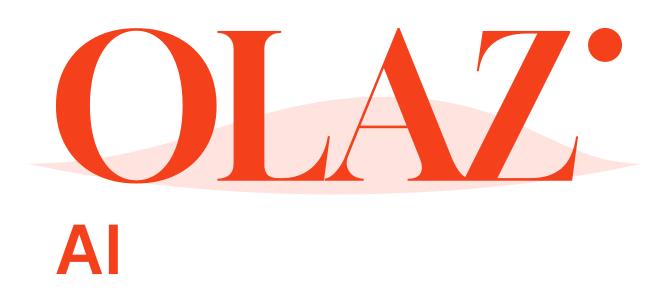

Logo, colour and type for Olaz AI: technical leadership and AI engineering by Rob Honeybul. Ola is Spanish for wave, and the name sits at the waterline.
The wordmark is OLAZ set in Gloock at the waterline: above a gentle wave the letters are solid, below it they sit in the water as a 30% tint of the same colour. The lockups add AI in Inter Tight. Use the stacked logo where there is room, the horizontal one in narrow bars, and the wordmark alone once the name is already clear.
In square spaces (favicons, LinkedIn and social avatars, app icons) the logo sits centred on a solid square. Use paper on signal for avatars, signal on paper for favicons.
Signal orange carries the brand. Use it for the mark, headings and labels; keep body copy in ink. Paper is the page, night is for dark blocks.
#F4401B · rgb(244 64 27)#F6F6F6 · rgb(246 246 246)#161616 · rgb(22 22 22)#111315 · rgb(17 19 21)Both are free (SIL Open Font License) on Google Fonts. Gloock is for the wordmark and very large headings only, always in capitals. Inter Tight does everything else: semibold uppercase for labels, light uppercase for marquees, regular for reading.